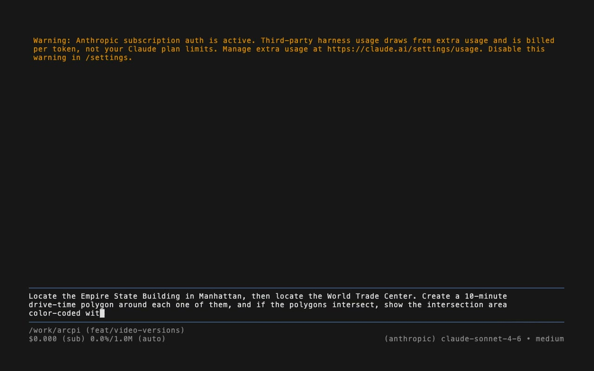
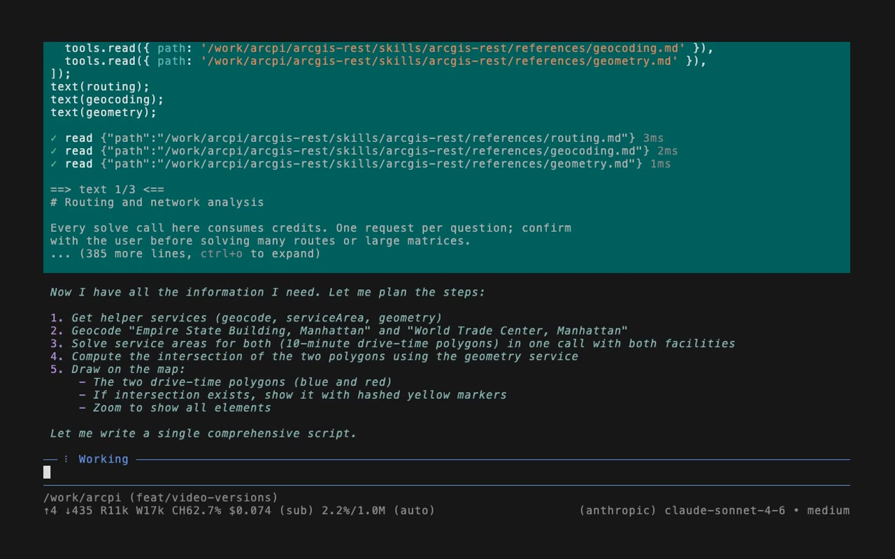
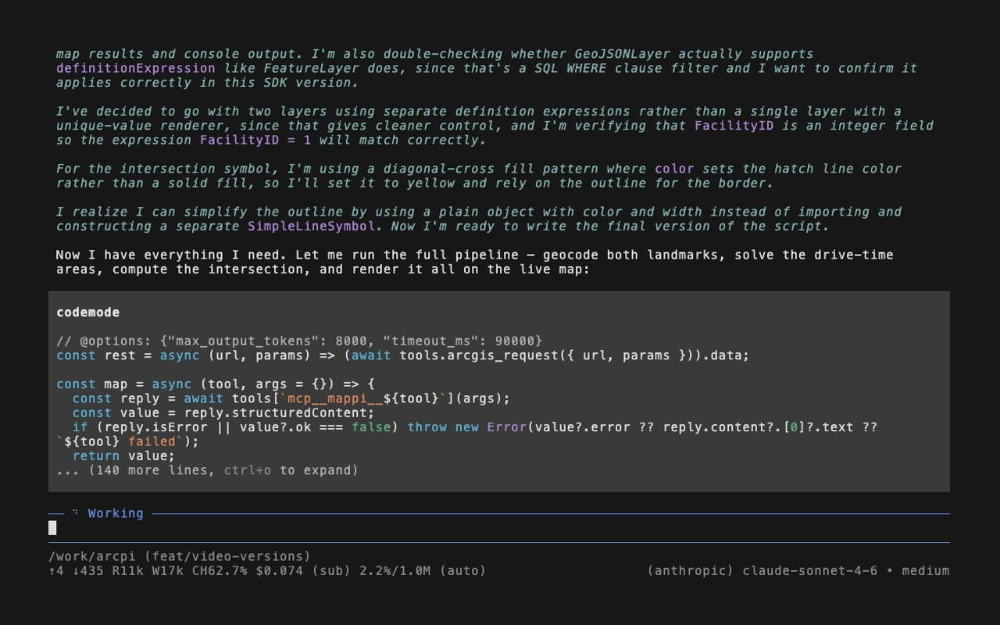
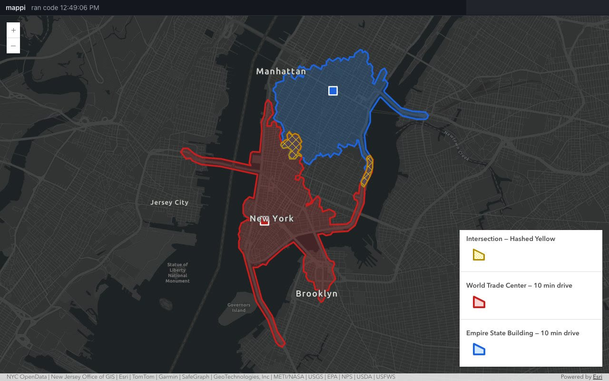
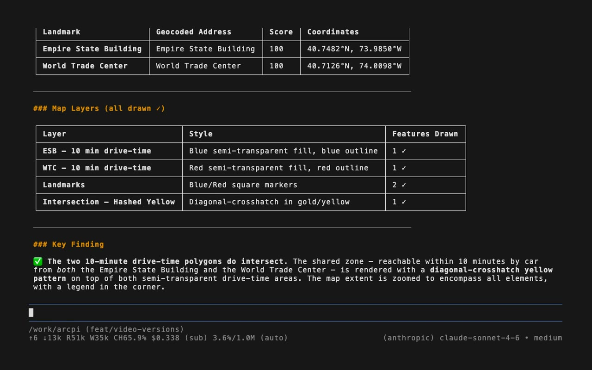

The idea in one paragraph
ArcGIS already has a large, well-documented web API for search, maps, addresses, routing, demographics and more. Instead of wrapping that API in yet another layer for AI tools, arcpi teaches an agent to use it directly: short written guides (called skills) explain which endpoint to call and how, and the agent writes a small program that makes the calls, combines the results and returns only the answer. Large data, like the outline of a city district, never passes through the conversation; it is saved to a file and drawn on the map.
The three pieces
pi, a minimal agent
pi is a small, terminal-based AI agent that can be extended with plain text guides and a few lines of code. arcpi adds four guides (ArcGIS web services, standalone maps, local files, and the live map), one extension that talks to ArcGIS as the signed-in user, and a launcher script. There is no build step and nothing to install beyond pi and Node.js.
Code mode: one script instead of many round trips
Most AI agents call one tool, wait for the answer, think, and call the next. In code mode the agent writes one short JavaScript program that runs all the steps at once: look up both addresses, compute both drive-time areas, find the overlap, and draw the result. The program runs in a locked-down sandbox with no network access of its own; it can only call the tools arcpi provides. In the run above, that one program did all of the ArcGIS work in 5.3 seconds.
The map is separate from the chat
The terminal is for asking and explaining. A browser page, served by a small companion program called mappi, is for looking. The agent sends layers to the map and sends counts, names and explanations to the chat. Each side does what it is good at, and the chat never fills up with coordinates.
What happens when you ask a question
These are the actual steps from the recorded run shown at the top of the page.
-
You ask in plain English
The question is typed into pi in the terminal. You do not name any service, endpoint or parameter.

The question, typed into a fresh pi session running in Docker. -
The agent reads the relevant guides and makes a plan
It reads the ArcGIS guide, then the three references this question needs (addresses, routing and geometry) in a single step, and writes down a five-step plan.

Three reference guides read at once, followed by the plan. -
It writes one program that does the work
The program finds both landmarks, asks ArcGIS for both 10-minute driving areas in a single request, asks for the overlap of the two, and sends drawing instructions to the map. It also checks that every layer actually appeared on the map before reporting success.

The start of the program the agent wrote and ran. -
The map shows the result; the chat explains it

Blue: 10 minutes by car from the Empire State Building. Red: 10 minutes from the World Trade Center. Yellow hatching: reachable from both. 
The answer in the chat: where each landmark is, which layers were drawn (each one confirmed), and that the two areas do overlap. From typing the question to the final answer took about three minutes, most of it the model thinking. The ArcGIS calls themselves took seconds.
Credentials stay out of the conversation
- You sign in once
-
./arcpi loginopens your browser for the standard ArcGIS sign-in. The agent and the map both use that login; neither ever sees the password or the token. - The token only goes to ArcGIS
- The token is attached only to requests for hosts your ArcGIS organization trusts. It is never shown to the AI model, never written into a script, and is blanked out of any response that happens to contain it.
- Shapes stay on disk
- Lines and polygons are saved as files and handed around by reference. The model sees "a polygon with 42 points in this file", not the points themselves.
- Some services cost credits
- Routing, drive-time areas, batch address lookup and demographics are billed to your ArcGIS organization. The guides tell the agent to confirm before running many of them.
Running it locked down
arcpi is designed to run inside OpenShell, a sandbox where nothing is allowed unless a policy says so: no network access except to the AI model and ArcGIS, no access to your files except what is copied in, and real credentials held outside the sandbox and swapped in only for approved hosts.
The OpenShell setup is a written recommendation and has not been run yet. The terminal and map shown on this page ran in ordinary Docker containers on a laptop.
Trying it
You need pi, Node.js and an ArcGIS organization account with an OAuth app. Then, from a copy of the project:
export ARCGIS_PORTAL_URL=https://your-org.maps.arcgis.com export ARCGIS_CLIENT_ID=your-oauth-client-id ./arcpi login # once, in your browser docker compose -f compose.map.yaml up --build -d --wait docker compose -f compose.map.yaml attach arcpi # then ask a question
Open http://127.0.0.1:8787/ in your browser to see the map. Questions
about your own local GeoJSON or CSV files work without signing in at all.
What it does not do
- It does not edit ArcGIS Pro projects or read file geodatabases directly; export the data first.
- It does not publish or share anything unless you explicitly ask.
- It does not cover geoprocessing, publishing, knowledge graphs or utility networks yet.
- Its speed figures come from single recorded runs, not benchmarks.